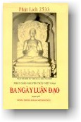

|
BuddhaSasana Home Page |
Vietnamese, with Unicode Times font |
|  |
Ba Ngày Luận ÐạoMaha Thong Kham MedhivongsPL. 2506 - TL. 1963 |
| Lời
Tựa
Năm 1942, tôi vừa thi đậu bằng tiểu học Phạn ngữ, liền được Quốc Vương Ai Lao (Lào) mời lên Vạn Tượng (Vientiane) lãnh bằng và dự lễ khánh thành chùa Phra Keo. Ðây là cuộc lễ thật long trọng, chào mừng thành quả năm đầu của cuộc chấn hưng nền học vấn của chư Tăng ở Ai Lao. Chính tay Quốc Vương phát cấp bằng cho chư Sư. Trong khi đi tàu từ Savannakhet đến Vientiane để lãnh bằng, tôi được duyên may gặp một vị thiện nam cùng gia quyến cũng đi dự lễ. Ông thiện nam ấy biết tôi là người Việt, có lòng tốt hỏi thăm sức khỏe tôi và nhơn vui miệng có bàn qua vấn đề Phật pháp. Luôn trong ba ngày, ông vẫn ở bên tôi, hỏi những điều bấy lâu nay ông nghi ngờ về Phật giáo. Tôi ghi lại tỉ mỉ những câu hỏi của ông và những lời giải đáp của tôi họp thành quyển sách này, nhan đề là BA NGÀY LUẬN ÐẠO. Ngót hai mươi năm qua, tôi đã giữ kín quyển sách này, đinh ninh rằng thế nào tôi cũng phải ấn hành cho tròn lời hứa với ông. Có lẽ nhận thấy quyển sách này khả dĩ hữu ích trong cuộc hoằng dương Phật pháp phần nào, ông THUẦN PHONG sẵn lòng góp công chỉnh đốn văn thể, đồng thời các hàng thiện tín cũng tán thành, nên khiến lời nguyện hai mươi năm qua bỗng nhiên được viên thành. Tôi thiết tưởng quý Bà, quý Ông thiện tín cũng đồng ý về giá sách tượng trưng ấy. Sau cùng tôi xin hồi hướng công quả pháp thí này đến tất cả chúng sanh trong cõi Ta bà thế giới, hầu được nhiều hạnh phúc, nhứt là không thù oán nhau, không làm hại lẫn nhau và trở thành người chánh kiến để tu hành giải thoát khỏi vòng luân hồi. Maha
Thongkham Medivongs BA NGÀY LUẬN ÐẠO [01] Vấn: Bạch Ðại đức, tôi là người muốn tìm học giáo lý Thích Ca. Do theo kinh sách, tôi công nhận Phật giáo là đạo cao thượng nhất, nhưng không biết tại sao đức Phật gọi là đức Phật Thích Ca? Xin Ngài vui lòng giảng dạy cho chúng tôi biết Phật Thích Ca ấy là tên, hoặc họ, hoặc là hiệu của Ngài, mà người ta đặt ra vậy? Ðáp: Ðáp lời ông, tôi xin giải nghĩa chữ "Thích Ca Mưu Ni Phật". Thích Ca (SAKYA) là danh phái của đức Phật Tổ khi Ngài còn tại thế; Mưu Ni (MUNI) là Trí thức hay thông thái; Phật Ðà (BOUDDHA) là đấng có Trí tuệ sáng suốt thông hiểu hoàn toàn mọi lẽ trong trời đất. Phật Thích Ca ấy chẳng phải tên, mà cũng không phải họ, lại cũng chẳng phải hiệu của Ngài nữa. Người đương thời thường gọi như thế, bởi Ngài thuộc về dòng Thích Ca. Dòng Thích Ca thuộc về giai cấp KHATTIYA nghĩa là giai cấp Vua, chúa; thời ấy ở Ấn Ðộ chia ra làm nhiều giai cấp như:
Dòng vua chúa là dòng sang trọng nhất trong thời ấy, nhưng dòng Bà La Môn là dòng mà hạng nào cũng phải tôn kính, vì các vị Bà La Môn là hạng nắm vận mạng của người thời ấy. Vì người thời ấy cần về sự cúng tế thì phải nhờ đến hàng tu sĩ là hạng Bà La Môn. Vấn: Thưa Ngài, tại nguyên nhân nào lại có các phái như thế? Vậy đức Phật thiệt tên chi? Họ chi? Xin Ngài vui lòng giảng giải rõ về lịch sử của đức Phật cho tôi rõ, vì tôi là người hâm mộ tu Phật, mà nếu không hiểu rõ lịch sử đức Giáo Chủ của mình thì thật là hổ với tiếng "Tín đồ Phật giáo" lắm. Ðáp: Họ của Ngài là GOTAMA, âm là Cồ Ðàm, tên SIDDHATTHA, âm là Sĩ Ðạt Ta nghĩa là Vạn Sự Như Ý. Nguyên nhân phát sanh có dòng Thích Ca là xứ Ấn Ðộ xưa kia chia ra làm hai phần: Một phần gọi là MAJJHIMAPADESA hay cũng gọi là MADHYAMAPADESA nghĩa là Trung Ấn Ðộ, còn một phần nữa là PACCANTAPADESA nghĩa là xứ biên thùy. Người cai trị xứ Trung Ấn Ðộ thời ấy gọi là người ARIYAKA (hay cũng gọi là ARAYENA nghĩa là dòng quí phái), những người ARIYAKA là những người có tài lỗi lạc về chính trị cũng như về quân sự và văn chương, nói tóm lại người ARIYAKA là người hoàn toàn. Còn người cai trị xứ PACCANTAPADESA (xứ biên thùy) là người Ấn Ðộ, lúc bấy giờ người ta gọi là MILAKHA, có nghĩa là man rợ. Vấn: Bạch Ðại đức, nếu vậy người ARIYAKA kia không phải là người Ấn Ðộ sao? Ðáp: Nếu nói theo lịch sử của Ấn Ðộ thì giống người ARIYAKA ấy nguyên ở bên kia núi Hy Mã Lạp Sơn, đem binh đánh chiếm Ấn Ðộ, rồi đặt quốc hiệu là Trung Ấn Ðộ, phần còn lại ở phía Bắc thì gọi là xứ biên thùy, nghĩa là xứ còn dã man, hay là xứ bán khai. Giống người ARIYAKA ấy đóng đô ở nơi nào không thấy nói rõ. Trong mấy chục ngàn năm, họ truyền ngôi cho nhau; đến đời đức vua OKÀKARÀJA có chín người con, bốn trai năm gái. Lúc ấy Chánh hậu thăng hà, vua mới chọn một Quí phi lên thay thế quyền Chánh hậu. Bà này sanh được Hoàng nam mà trong kinh luật không nói tên. Trông thấy Thái tử tướng mạo khôi ngô, vua lấy làm hài lòng, mới phán với Chánh hậu rằng: "Trẫm sẽ ban hạnh phúc cho con khanh." Bà bèn tạ ơn đức vua. Ðến khi Thái tử khôn lớn, bà mới tỏ ý xin ngai vàng cho con bà. Vua không bằng lòng, nhưng bà vẫn tha thiết nài xin, nhắc lại lời hứa của vua ngày trước và thêm rằng sự ban thưởng xứng đáng nhứt là ngai vàng, vì đó mới là hạnh phúc thật sự. Vì muốn giữ lời hứa trước, nên vua phải cho đòi chín người con kia đến dạy rằng Ngài đã trót hứa cùng Thứ phi, và cấp cho các người con những đội hùng binh để ra đi lập quốc tại một xứ khác. Các con vâng lời, dẫn nhau đi đến một cảnh rừng SAKKA (cây giá tị) rồi lập kinh đô tại nơi ấy. Ở đây có một đạo sĩ tên là KAPILAVATTHU, âm là Ca Tì La Vệ, nên họ lấy tên của vị đạo sĩ ấy đặt tên cho kinh đô. Nhưng sau này xứ ấy sửa lại là xứ SAKKA vì lấy tên rừng cây SAKKA, còn kinh đô thì vẫn giữ tên Ca Tì La Vệ. Khi tạo xong kinh đô và tổ chức xong mọi việc, thì bá quan mới nghĩ tới sự làm lễ sính hôn cho các vị Thái tử và Công chúa. Xét rằng Thái tử và Công chúa là dòng Ariyaka mà đi làm lễ sính hôn với các dòng khác thì không hợp lẽ, nên bốn vị Thái tử nhận bốn người em gái của mình làm vợ, còn một người nữa sau gả cho đức vua Devadaha.(Ðây là phong tục dòng Thích Ca ở Ấn Ðộ thời xưa.) Ðến sau đức vua OKÀKARÀJA nhớ đến các con, Ngài mới phán hỏi đại thần của Ngài rằng các con của Ngài hiện giờ ở đâu. Một vị đại thần tâu rằng các vị đã lập quốc xong như thế đó. Ðức vua lấy làm hài lòng nên phán rằng: " SAKYAMUNÌ, SAKYAMUNÌ " âm là Thích Ca Mưu Ni (có chỗ âm là Thích Già Mâu Ni) nghĩa là thông thái và can đảm. Bắt đầu từ đó, người ta gọi dòng vua ấy là dòng Sakyamunì vì họ anh hùng thông thái nhứt, cho nên khi đức Thái tử Sĩ Ðạt Ta thành Phật, người ta cũng gọi Ngài là đức Phật Thích Ca Mưu Ni. Theo trong Tam tạng kinh thì chỉ thấy nói rõ từ đời đức vua JAYASENA trở đi đến đời đức vua Tịnh Phạn Vương như vầy: đức vua JAYASENA sanh được hai người con, một vị Thái tử và một nàng Công chúa. Thái tử tên là SÌHANU, Công chúa tên là YASODHARÀ. Thái tử SÌHANU đính hôn cùng Công chúa xứ Koliya tên là KÀNCANÀ. Còn Công chúa YASODHARÀ kết hôn cùng Thái tử xứ Koliya tên ÀNJANÀ. Sau khi vua cha thăng hà, Thái tử SÌHANU được lên kế vị, sanh được năm người con trai tên là SUDDHODANA, (âm là Sư Ðô Ðà Na hay nghĩa là Tịnh Phạn Vương) SUKKODANA, AMITODANA, DHOTODANA, GHANITODANA và hai Công chúa tên AMITÀ và PAMITÀ. Về phần Thái tử ÀNJANÀ về sau lên kế vị vua cha, còn vợ là bà YASODHARÀ, sanh được bốn người con, hai trai hai gái. Hai người con trai là Thái tử SUPPABUDDHA và DANDAPÀNI, còn hai Công chúa là MÀYÀ và PAJÀPATÌ (cũng gọi là GOTAMI). Vua SÌHANU cưới con gái của vua ÀNJANÀ là bà MÀYÀ và GOTAMI cho Thái tử SUDDHODANA (Tịnh Phạn). Vua xứ Koliya là ÀNJANÀ cưới hai người con gái của vua SÌHANU tên AMITÀ và PAMITÀ cho con trai mình là SUPPABUDDHA. Sau khi hai vị vua cha thăng hà, hai vị Ðông cung Thái tử hai nước lên làm vua. Ðức Tịnh Phạn Vương cùng bà MÀYÀ, hạ sanh được một vị Thái tử, đặt tên là Sĩ Ðạt Ta. Còn vua SUPPABUDDHA cùng AMITÀ sanh được một vị Thái tử, tên là Ðề Bà Ðạt Ða và một nàng Công chúa tên là Da Du Ðà La. Về sau, vua Tịnh Phạn cưới Công chúa Da Du Ðà La cho Ðông cung Thái tử Sĩ Ðạt Ta. Vấn: Bạch Ðại đức, trong Phật giáo có hai tên trùng nhau, tôi không phân biệt được rõ rệt, là Ðại đức NAN ÐÀ và Ðại đức ANANDÀ, xin Ngài hoan hỷ giải cho. Ðáp: đức Tịnh Phạn Vương kết hôn cùng hai bà Công chúa là bà MÀYÀ và GOTAMI. Bà MÀYÀ sanh Thái tử Sĩ Ðạt Ta, còn bà GOTAMI sanh được một vị, tên là Nan Ðà, và một bà Công chúa, tên là RÙPANANDÀ. Còn đức ANANDÀ là con vua SUKKODANA, là em thúc bá của đức Phật và là người đệ tử hầu cận Phật, có tài đức song toàn, biệt tài của Ngài là đức Phật dạy gì cũng đều thuộc lòng không quên một chữ. Vấn: Bạch Ngài, tại duyên cớ sao tên Sĩ Ðạt Ta có nghĩa là Vạn Sự Như Ý? Ðáp: Vì đức Tịnh Phạn Vương đã già rồi mà không có con nối ngôi, nên đêm ngày mong mỏi được một con trai nối dòng, sau sanh được một trai, ý muốn của Ngài được toại nguyện nên Ngài đặt tên là Vạn Sự Như Ý. Một lẽ nữa, vị đạo sĩ tên ASITA và ông Kiều Trần Như xem tướng của Thái tử có tiên đoán rằng nếu Thái tử xuất gia hành đạo chắc chắn sẽ thành chánh quả, nếu chúng sanh nào vâng giữ và hành theo lời chỉ giáo của Ngài thì sẽ được vạn sự như ý. Ðây là theo lời chú giải trong Tạng luật. -ooOoo- Vấn: Bạch Ngài, Ngài vừa ban bố ánh sáng đến cho tôi bằng cách giải bày lịch sử đức Phật, xin hết lòng tạ ơn Ngài. Nhưng bạch Ngài, xin Ngài vui lòng cho tôi biết người tu Phật phải làm sao trong bước đường đầu tiên? Ðáp: Bước đường đầu tiên của người tại gia cư sĩ là phải thọ Tam qui và Ngũ giới. Vấn: Tưởng chi chớ Tam qui và Ngũ giới, tôi đã có rồi; tôi có cả lồng phái nữa. Ðáp: Tôi cũng biết người Việt chúng ta, trăm người như một qui y ai cũng có lãnh luôn lá phái, nhưng không biết qui y để làm gì và lá phái để chi? Nói qui y cho mạnh giỏi, thế là đủ, chớ không hiểu ý nghĩa của sự qui y là sao. Vấn: Vậy chớ theo Ngài hiểu qui y là thế nào? Không phải nhờ oai đức của đức Phật đặng mạnh giỏi sao? Ðáp: Ðó, ông cũng qui y cho mạnh giỏi. Thưa ông, qui y có ý nghĩa khác xa; tùy theo ta qui y Phật, qui y Pháp, qui y Tăng, sự qui y chỉ có ý nghĩa về triết lý và luân lý; nếu qui y đem sức khỏe đến cho ta, đó là sức khỏe tinh thần vậy. Qui y Phật có nghĩa là nương theo Phật, theo đấng hoàn toàn giác ngộ, giải thoát khỏi sanh, tử, luân hồi, theo gương mẫu, hành động của Ngài mà tu hành cho tinh tấn. Qui y Pháp nghĩa là nương theo Pháp tu của Phật, tin chắc những lời giảng dạy của đức Phật đủ khả năng dẫn ta vào con đường đi tới nơi vô sanh bất diệt, là đại Niết Bàn, tin theo rồi hành theo thành khẩn. Còn qui y Tăng là nương theo các vị xuất gia, đại biểu chơn chánh của đức Phật, có sứ mạng bảo tồn và hoằng dương giáo pháp. Nói tóm lại người cư sĩ phải nương theo ba ngôi tôn quí là Phật, Pháp, Tăng rồi thọ trì Ngũ giới hay Bát quan trai giới tùy theo đức tin của mình. Trong khi xin qui giới, ta phải hết lòng thành kính chú tâm vào lời truyền răn của các vị Ðại đức thay mặt cho Tăng và Phật truyền dạy ta. Vấn: Bạch Ngài, theo lời của Ngài dạy thì cần phải khẩu truyền tâm thọ, hành theo mới được, chớ lãnh lồng phái không ích chi hết phải không Ngài? Ðáp: Theo thiển kiến của tôi thì là vậy. Vấn: Theo ý tôi, nếu đức Phật có oai lực có thể làm cho chúng sanh khỏi khổ thì lá phái cũng có oai lực cứu khổ phần nào. Ðáp: Ðành rằng đức Phật có oai đức vô biên vô lượng, nhưng mà Ngài không thể ban cho ta sự an vui được, nếu ta không thật hành theo lời dạy bảo của Ngài. Thật vậy nếu mình đói, có người đem cơm đến mời mình ăn, mà mình không ăn, lại nhờ người khác ăn giùm, thì mình làm sao no được? Phật là người cho cơm; cơm là Pháp; mình đương đói cơm tức là chúng sanh đang đói Pháp. Bổn thân ta không dùng cơm, chúng sanh không hành Pháp, thì Pháp có huyền diệu cũng không cứu độ chúng sanh được. Vì vậy Phật đã có dạy rằng Ngài chỉ là vị hướng đạo, chớ không phải là người giải thoát chúng sanh, chúng sanh phải tự mình giải thoát bằng cách hành theo Pháp và noi gương Phật. Vấn: Nếu vậy thì đức Thế Tôn ích kỷ lắm. Ðáp: Tại sao gọi là ích kỷ? Vấn: Vì Ngài không tế độ chúng sanh, không ban phước cho chúng sanh. Ðáp: Ðức Phật là đấng từ bi vô lượng đối với chúng sanh hết lòng lo tế độ chúng sanh, không bỏ lỡ một cơ hội nào để tế độ chúng sanh; nhưng Ngài chỉ có thể tế độ những chúng sanh nào có duyên cùng Ngài, nghĩa là người ấy nghe và làm theo lời giảng dạy của Ngài. Ngài là đấng hướng đạo tài ba, biết rõ các đường lối; đường kia có hầm hố, thú dữ yêu tinh, đường này bằng phẳng, hiền lành, yên ổn... Ngài đứng nơi ngả tẽ, chiếu ngọn đèn từ bi, hướng người đi qua con đường này, mà bảo rằng đây là con đường độc nhất an vui, kìa là con đường cam go hiểm trở. Chúng sanh tự do chọn lựa, chớ Ngài không ép một ai. Vấn: Bạch Ngài, Ngài nói vậy, có lẽ Ngài quên rằng có một lúc nọ đức Thế Tôn dùng thần thông độ ba anh em ông Uruvelakassappa (Ưu Lâu Tần Loa Ca Diếp)? Ngài dạy vậy có lẽ mâu thuẫn với kinh luật của đức Như Lai đã dạy rồi chăng? Ðáp: Sở dĩ đức Thế Tôn tế độ ba anh em ấy là vì Ngài là đấng hoàn toàn sáng suốt, đã biết rằng ba vị ngoại đạo ấy có duyên sẽ đắc thành Thánh quả, nên Ngài không màng cực nhọc và không chấp sự khinh khi của ba vị ấy, khi chưa thông hiểu lẽ giải thoát. Ðây để chỉ cho ông thấy rõ thêm lòng kiên nhẫn và đức từ bi cùng sự hy sinh của một đấng siêu phàm. Trái lại, Ngài không thể tế độ đức vua xứ Koliya là phụ vương của bà Da Du Ðà La, ngoại tổ của đức La Hầu La, vì đức Phật biết vua xứ Koliya là SUPPABUDDHA không có duyên lành với Ngài, đành để cho bị đất sụp chết. Thậm chí dòng Thích Ca bị Thái tử VIDUDABHA tru diệt, Ngài cũng không can thiệp, đành để cho duyên nghiệp thanh toán mọi người theo luật nhân quả. Vấn: Ngài dạy thế nghe cũng có lý, nhưng tôi xin ví dụ chuyện này: Có một người kia té xuống hố sâu không thể lên được. Lúc ấy có một vị Ðại đức đi ngang qua lên tiếng nói vói xuống người mắc nạn: "Bần Tăng thấy người bị nạn như thế này lấy làm thương hại quá! Tại sao người té thế? Hồi trước bần Tăng cũng bị té như người, cũng tại nơi cái hố này, rồi bần Tăng cố leo theo con đường kia mà lên. Vậy người hãy rán leo theo con đường kia thì sẽ lên được an toàn." Nói xong vị Ðại đức ấy bỏ đi. Kế đó có vị Ðại đức thứ nhì đi đến, thấy người lâm nạn động lòng từ bi, bèn nhảy xuống đem lên. Vậy ở vào trường hợp ấy, ta phải cám ơn vị nào hơn? Theo lý luận của Ngài thì vị đi trước là đức Phật. Vậy đức Phật ví như người qua đường thôi. Thế không phải là ích kỷ còn là gì nữa? Ðáp: Không. Lý luận của tôi phải như vầy mới đúng. Nếu tôi rớt xuống hố ấy mà không lên được, thì vị Ðại đức kia cũng không lên được; nếu Ngài cố xuống thì lại chết cả hai. Vậy tôi cứ theo con đường của vị Ðại đức trước kia đã leo lên khỏi hố thì có phải là hoàn toàn hơn không? Vả chăng nếu tôi chưa muốn lên, mà vị Ðại đức ấy xuống đem tôi lên, thì tôi rầy lắm! Vấn: Ngài nói vậy sao phải? Vị Ðại đức kia là bực thần thông quảng đại sao lại lên không được? Còn như nạn nhơn không muốn lên, đó là do nơi duyên nghiệp của nó. Ðáp: Nếu nói rằng vị ấy có thần thông thì Ngài cần gì phải xuống hố đem tôi lên, cứ níu tay tôi hay dùng tí thần thông là đem tôi lên khỏi hố được dễ dàng. Còn nếu tôi nói rằng Ngài là người có thần thông biết rõ duyên nghiệp của chúng sanh, thì Ngài cần gì phải nhảy xuống tế độ, cứ để chúng sanh trả nghiệp cho yên. Theo tôi thì sự cứu người cũng tùy theo trường hợp. Hễ gặp mà cứu, không nghĩ trước xem sau, thì có hại. Ví như có tên đạo tặc lấy trộm của người, đang bị cảnh sát truy nã, tên đạo tặc yêu cầu ta cho y tạm trốn; nếu ta cho, thì khi cảnh sát bắt gặp, ta lại bị can tội đồng lõa. Vậy trước khi tế độ cũng phải coi người có duyên cùng không. Theo ý tôi thì thái độ của vị Ðại đức thứ nhứt đúng lắm, vì Ngài chẳng qua là vị hướng đạo thôi. Vấn: Ngài nói vậy cũng phải, song vị Ðại đức thứ nhì, trước khi xuống hố cứu nạn nhơn, có lẽ Ngài cũng đã thấy người có duyên rồi chớ? Ðáp: Nếu vậy thì cũng như Ngài Ðại đức đi trước kia vậy, chớ có khác gì đâu. Nhưng vị Ðại đức sau chỉ khác một chút là xuống vớt lên. Theo tôi thì tôi tán thành vị thứ nhứt, vì lẽ chúng sanh cần phải tự độ, chớ không được ỷ lại vào sự tế độ của ai. Vả chăng tâm lý của chúng sanh chẳng khác chi tâm lý của người sa hố. Nếu người sa hố được có người vớt, thì họ cứ tha hồ phóng túng, vì họ nghĩ rằng dầu chẳng may mà họ có té xuống hố sâu chăng nữa, cũng có người vớt lên, chớ chết đâu mà sợ. Còn như không ai vớt lên mà có người chỉ đường cho họ để họ phải tự mò lấy mà lên thì họ lại nghĩ rằng: "Mỗi lần té là đau, mà không ai cứu vớt, chỉ phải tự mình tìm đường mà lên lấy thì khổ lắm. May là được người chỉ đường cho mới lên được, bằng không thì phải chết rã xương nơi hố này rồi." Một khi suy nghĩ như thế, họ kinh sợ và không dám tái phạm nữa, rồi tự họ bảo vệ lấy họ; có như vậy, mới được hoàn toàn hơn. Ðức Phật chỉ là một vị hướng đạo chớ không phải là người tiếp cứu, ban phước hay xá tội cho chúng sanh: tự chúng sanh phải hành theo lời Ngài chỉ dạy, nếu muốn thoát khỏi sanh, tử, luân hồi. Ðức Phật ví như vị lương y biết tất cả các nguyên nhân sanh ra các chứng bịnh, rồi Ngài biết chế ra các thứ thuốc thích ứng để chữa các chứng bịnh. Ngài biết chúng sanh bị bịnh gì thì cho thuốc ấy; nhưng bịnh nhân không chịu uống, thì Ngài cũng phải đành co tay: đức Phật không bao giờ bắt buộc ai hành theo Ngài. Vấn: Bạch Ngài, Ngài dạy thấy có mâu thuẫn không, vì tôi thấy trong kinh có dạy rằng: đức Phật A Di Ðà có tiếp độ chúng sanh vãng sanh về cõi Cực lạc. Vậy, cũng là Phật, trong việc tế độ, đức A Di Ðà và đức Thích Ca lại khác nhau sao? Ðáp: Ðã nhiều năm nghiên cứu kinh điển bằng PÀLI, tôi chưa bao giờ thấy nói về đức Phật A Di Ðà, hoặc sự tiếp độ của một vị Phật nào mường tượng như của đức Phật A Di Ðà mà ông nói đó. Dầu sao, tôi tưởng có thể nói với ông rằng theo lý của kinh, nếu có đức A Di Ðà chăng nữa thì Ngài có thể tiếp độ những người có duyên với Ngài, nghĩa là những người chuyên trì danh hiệu của Ngài; chớ không bao giờ Ngài mang tràng phan bảo cái đi rước những người suốt đời làm việc hung ác như sát sanh, trộm cắp v.v... Chắc chắn không có kinh nào nói rằng đức A Di Ðà độ người không chuyên trì danh hiệu của Ngài. Vấn: Tôi thường nghe các bậc Cao Tăng Ðại đức dạy rằng cảnh của đức A Di Ðà rộng lớn thênh thang, đẹp vui cùng cực, còn cảnh của đức Thích Ca thì nhỏ hẹp, nên đức Thích Ca không tiếp độ chúng sanh, mà để cho đức A Di Ðà tiếp độ. Bạch Ngài như thế có đúng hay không? Ðáp: Tôi xin thú thật với ông rằng: "Cảnh của đức Thích Ca và cảnh của đức A Di Ðà, tôi chưa từng đi đến, nên tôi không biết rộng và hẹp ra thế nào. Còn theo ông thì cảnh của đức Thích Ca ở đâu?". Vấn: Theo kinh, luật thì cảnh của đức Thích Ca ở Tây Thiên Trước, tức là Ấn Ðộ. Ðáp: Ta phải quan niệm rằng trong bổn thể của đức Thích Ca có hai cá thể: một cá thể phàm, tức là phần con người Thái tử Sĩ Ðạt Ta; một cá thể phi phàm, tức là phần chơn linh giác ngộ đã thành Phật. Nếu chấp nhận quan niệm đó thì xứ Ấn Ðộ vốn là xứ sở của Sĩ Ðạt Ta, như chúng ta đã biết từ lúc mở đầu chuyện luận đạo này; còn xứ sở của đấng giác ngộ, của Phật Thích Ca, thì lại là Niết Bàn. Ấn Ðộ thuộc cõi tam giới, là chốn ngự trị của vô thường, khổ não; Niết Bàn là cõi an lạc vô biên, Ma vương không biết đâu mà tìm đến. Vấn: Theo lời dạy của Ngài thì cảnh Niết Bàn không có gì cả, nghĩa là hoàn toàn giải thoát, vậy chớ Không là Không thế nào? Ðáp: "Không" có nhiều nghĩa là: không còn xác thân này, không sanh, không già, không đau, không buồn rầu, than van, thất vọng; ta có thể nói tóm lại là cảnh Niết Bàn không có khổ não. Vấn: Nếu Ngài dạy thế thì còn chi khoái lạc cho bằng, nhưng xin lỗi Ngài, hiện giờ Ngài có đạt Niết Bàn chưa mà Ngài rõ được quả vị của Niết Bàn? Ðáp: Tôi chưa đạt Niết Bàn, nhưng tôi nhận rằng có Niết Bàn và Niết Bàn có quả vị như tôi đã nói. Xin ông vui lòng trả lời những câu tôi hỏi, nếu ông trả lời được thì ông nhận thấy quả vị của Niết Bàn có thật vậy. Ông có biết rằng những người cụt tay, cụt chơn có khổ lắm không? Vấn: Bạch Ngài, tôi biết họ khổ lắm chớ. Ðáp: Tại sao ông biết những người ấy khổ, trong lúc chính ông không bị cụt tay chơn? Vấn: Thật Ngài hỏi rắc rối quá! Ðành rằng tôi không lâm vào cảnh của họ, mà tôi vẫn nhận thức như vậy, vì tôi tin rằng trong thân thể chúng ta mà thiếu một món gì thì khổ lắm. Ðáp: Thật ra thì câu hỏi của tôi không rắc rối lắm, nó chỉ tương đương với câu hỏi của ông thôi. Sự thật thì tôi chưa được hưởng quả vị của Niết Bàn, nhưng tôi được học hỏi và dùng trí tuệ suy gẫm quan sát để hiểu rằng: Lẽ cố nhiên trên đời này không có gì gọi là tuyệt đối. Hễ có khổ thì có pháp diệt khổ, cũng như có luân hồi thì dĩ nhiên phải có giải thoát. -ooOoo- Vấn: Ngài giải làm tôi hiểu rõ và không thắc mắc nữa. Tôi mảng hỏi xa xăm quanh quẩn mà không tìm cách hành đạo trong hiện tại. Bạch Ngài, xin Ngài dạy tôi phải làm sao cho tròn phận sự của người tại gia cư sĩ. Phải thờ ai? Làm cách nào? Ðáp: Người tín đồ Phật giáo chân chánh chỉ thờ một chân dung của đức Phật Tổ Thích Ca mà thôi, ngoài ra không thờ tượng Thần thánh nào khác. Vấn: Bạch Ngài, vậy bàn thờ Tổ tiên mình đều phải dẹp hết chăng? Ðáp: Không, Tổ tiên, cha mẹ, ta vẫn phải thờ. Vấn: Bạch Ngài thế thì khó quá và bà bạn tôi đây còn thờ bà Mẹ sanh; còn riêng tôi, tôi còn thờ ông độ mạng, ngoài ra còn ông Táo, ông Thổ Thần nữa, vậy chúng tôi phải làm sao? Chúng tôi thấy không đủ can đảm để bỏ, vì đã thờ lâu năm lắm rồi. Ðáp: Việc này khó giải quyết thật, vì ông và bà cũng như phần đông thiên hạ đều cúng nhiều vị Thánh thần và có thể bất bình nếu lòng tin tưởng bị va chạm. Nếu ông không phiền thì tôi xin giải. Vấn: Bạch Ngài, xin Ngài cứ an lòng giảng giải, tôi không dám hờn giận chi Ngài cả, vì Ngài có phận sự thay mặt đức Từ Phụ để dẫn đường giải thoát cho chúng sanh. Lẽ cố nhiên, thuốc đắng thì người bịnh không ưa, cây cong ghét làn mực tàu. Vả lại Ngài có phận sự dạy lẽ phải, còn tin hay không lại là quyền của tôi; nếu tôi nhận thấy rằng lời của Ngài dạy là chí lý, chơn chánh, là con đường giải thoát, thì tôi không dại gì mà không hành theo. Xin Ngài yên trí và coi tôi là một tín đồ của Ngài. Ðáp: Quý hóa biết mấy! Vậy trước khi vào đề, tôi xin ông và bà giải cho tôi biết rằng sanh nghĩa là gì. Vấn: Bạch Ngài, sanh nghĩa là đẻ. Ðáp: Thế thì bà Mẹ sanh nghĩa là bà mẹ đẻ ta, người đã tạo ra ta chớ không phải vị nào khác. Theo tôi tưởng thì các bậc tiền nhân khi xưa dạy ta thờ phụng bà mẹ đẻ của chúng ta chớ không phải thờ các bà chúa mà các bà thờ hằng ngày đây. Trong kinh đức Phật có dạy rằng công ơn cha mẹ không thể đo lường được, đức Phật có ví dụ công đức cao dày của cha mẹ như vầy. Có một người kia có trăm cái đầu, mỗi cái đầu có một trăm cái miệng, rồi người ấy cứ ngồi đếm một, hai, ba, v.v... cho đến một trăm năm, số đếm ấy nhiều vô lượng, nhưng cũng chưa bằng một phần tỷ của công đức cha mẹ. Vì vậy đức Thế Tôn dạy rằng bổn phận làm con phải phụng dưỡng cha mẹ bằng năm phápa`
Vấn: Bạch Ngài, bấy lâu nay bà bạn tôi đinh ninh rằng thờ bà mẹ sanh là đúng, mà bỏ quên bà mẹ ruột của mình. Nếu hôm nay không gặp Ngài thì đến bà thân sinh của bạn tôi từ trần, chúng tôi cũng không biết lo đáp đền công ơn sanh dưỡng. Hôm nay tôi thấy rõ rằng bấy lâu nay chúng tôi không thờ Phật trong nhà mà đi thờ Thích Ca ngoài đường. Chúng tôi nguyện rằng, sau chuyến đi này, chúng tôi sẽ hết lòng phụng dưỡng mẹ già, hầu mong đền đáp công ơn sanh dưỡng trong muôn một. Vấn: Bạch Ngài, còn Ông độ mạng là ông chi? Xin Ngài vui lòng giải luôn cho. Ðáp: Ðộ mạng nghĩa là phò hộ ta cho được mạnh giỏi, phải không ông? Vấn: Bạch Ngài phải. Ðáp: Người Âu, Mỹ không có thờ Ông độ mạng như ta mà họ cũng vẫn mạnh giỏi như thường, còn hùng cường, giàu sang hơn chúng ta. Vậy ông thử nghĩ coi ai độ mạng cho họ? Vả chăng ông Quan Công mới ra đời trong thời Tam Quốc, rồi chết đi, thì từ ấy mới có chuyện Ông độ mạng; vậy trước thời kỳ ấy ai độ mạng cho thiên hạ? Cho nên sở dĩ người ta thờ đức Quan Thánh là người ta thờ đức Trung, Cang, Nghĩa, Khí để làm gương, chớ không phải để được hộ mạng. Vấn: Bạch Ngài, những lời Ngài hỏi tôi không hiểu rõ, nên không thể đáp được. Vậy xin Ngài vui lòng giải cho. Ðáp: Theo sự hiểu biết của tôi, thì trong khi chúng ta bị quân Tàu đô hộ, chúng ta phải chịu ảnh hưởng của họ từ văn chương đến tôn giáo; mà tôn giáo của người Tàu thời phong kiến thì có khuynh hướng về đa Thần giáo, tuy đồng thời họ sùng bái Phật giáo. Khi truyền sang nước Tàu thì Phật giáo đã bị thay đổi một phần lớn, là đã bị Ấn giáo (Bà La Môn) lẫn vào, rồi lại bị ảnh hưởng của Lão giáo và Khổng giáo. Vì vậy mới có chuyện thờ các vị thần, chẳng hạn như ông Quan Công. Vấn: Bạch Ngài, nếu theo lời Ngài dạy thì sự thờ phượng ấy không có lợi ích thiết thực, chẳng qua đó là một sự cổ tục của người Tàu; thế tôi xin hứa với Ngài rằng tôi cương quyết dứt bỏ. Nhưng bạch Ngài chúng ta bỏ cái tập tục thờ Quan Công, để rồi sang tập tục khác, là phải thờ Phật nữa sao? Ðáp: Chúng ta thờ Phật, vì Ngài là đấng đã hoàn toàn giải thoát, trọng Phật vì Ngài là đấng Ðại từ, Ðại bi. Ta thờ chân dung của Ngài là để ta thường trông thấy và luôn luôn nhớ tưởng đức hạnh cao cả của Ngài để ta hành theo: rủi ra ta làm điều quấy hay nghĩ điều ác, chân dung của đức trọn lành làm cho lòng ta hổ thẹn tội lỗi, rồi khiến ta cố diệt trừ những điều quấy ấy. Vấn: Bạch Ngài, tôi có xem nhiều đoạn kinh nói rằng: đức Phật chiến thắng Ngũ Ma. Cái chi là Ngũ Ma? Xin Ngài vui lòng giảng cho. Ðáp: Ngũ Ma ấy tiếng Phạn gọi là PANCAMÀRA. Ngũ Ma ấy là:
Ðức Thế Tôn đã thắng năm hạng Ma vương này khi Ngài ngự dưới cội Bồ đề. Vấn: Bạch Ngài, xin Ngài giải năm hạng Ma vương này cho chúng tôi rõ, chớ Ngài chỉ kể tên không, chúng tôi không hiểu gì cả. Ðáp: Tiếng Ma vương có lẽ là từ tiếng Phạn MÀRA mà ra, nghĩa là sự gì phá hoại những hạnh phúc của chúng sanh.
Tóm lại có thể chia Ma vương làm hai loại:
Vấn: Bạch Ngài, nếu chúng ta muốn thoát khỏi sự hành hạ của Ngũ Ma ấy, chúng ta phải làm cách nào? Phải hành làm sao? Ðáp: Sanh vào cõi người, chúng ta bị dính lưới mắc bẫy của Ma vương, bây giờ muốn giải thoát, phải xé lưới phá bẫy của Ma vương mới ra khỏi được. Vấn: Bạch Ngài, xin Ngài vui lòng chỉ thế nào gọi là lưới, bẫy của Ma vương? Ðáp: Lưới của Ma vương mà tôi nói đây không phải là lưới bằng nhợ, bằng gai của ngư ông, mà là lưới vô hình của NGŨ TRẦN bao bọc chúng ta, khiến tâm chúng ta hằng ưa thích, quyến luyến không chịu rời ra trong gang tấc, nó giam hãm ta trong vòng sanh tử luân hồi, trong rừng sầu biển khổ ví như chim, cá, hươu, nai bị mắc trong lưới của ngư ông trong bẫy của lạp hộ. Vấn: Theo lời giảng giải của Ngài thì một khi muốn tu cho thoát khỏi luân hồi, người ta phải ráng thoát khỏi " Tay" của Ma vương hay là phải tránh xa hoặc phá hủy lưới và bẫy của Ma vương? Ðáp: Chiếu theo Phật ngôn thì phải thoát ra khỏi bẫy, lưới của Ma vương, chớ không phải tay của Ma vương. Vấn: Bạch Ngài, tại sao đức Thế Tôn lại dạy cách hành để thoát khỏi lưới của Ma vương, mà không dạy hành để thoát khỏi tay của Ma vương. Ðáp: Phiền não là tham, sân, si hằng làm cho tâm ta nhơ đục. Ðiều nhơ đục ấy ví như Ma vương là nguyên tố làm bế tắc và phá hoại nguồn cội của các điều lành trong tâm ta. Còn NGŨ TRẦN là sắc, thinh, hương, vị, xúc hằng làm cho tâm ta mê say. Ðó là lưới của Ma vương hằng bủa vây ta một cách chặt chẽ. Nếu ta không mê theo ngũ trần thì lưới của Ma vương không bao trùm được ta và không thể hành hạ ta được. Khi ta không bị sa trong lưới của Ma vương, thì ta được tự do mà làm điều phước thiện, ấy là ta đã giải thoát khỏi lưới của Ma vương. Ðức Thế Tôn là đấng hoàn toàn Giác ngộ, trông thấy các pháp giải thoát, nên Ngài dạy cố giải thoát cho khỏi lưới của Ma vương. Nếu chúng ta thoát khỏi lưới của Ma vương, nghĩa là chúng ta đã khỏi vòng luân hồi rồi. Vấn: Bạch Ngài, người muốn giải thoát khỏi lưới của Ma vương phải hành thế nào? Ðáp: Phải thu thúc ba căn là:
Vấn: Bạch Ngài, tại sao gọi là luân hồi? Luân hồi ấy do nơi đâu mà phát sanh ra? Ðáp: Luân hồi nghĩa là xoay vần không ngừng nghỉ, theo lý là sanh rồi diệt, diệt rồi sanh, cứ quanh quẩn như thế trong ba cõi sáu đường. LUÂN HỒI do nhân PHIỀN NÃO, NGHIỆP và QUẢ. Chúng sanh vì phiền não nên khi làm một việc gì, việc ấy tạo ra một hệ quả gọi là Nghiệp: Việc thiện thì nghiệp thiện, việc ác thì nghiệp ác. Nghiệp này tồn tích từ kiếp trước đến kiếp này qua kiếp sau, khiến ta hưởng phước hay là đền tội, tùy theo thiện nghiệp hay ác nghiệp: phước hay tội, đó là cái quả của nghiệp quả này là nhân sanh ra ta, rồi cái ta ấy không trọn lành, do phiền não sai khiến, lại tạo thêm nghiệp mới; rồi nghiệp mới gây thêm quả mới và quả mới tạo ra nhân mới, cứ tuần hoàn xoay chuyển như vậy mãi. Hễ con người chưa giải thoát được thì cái vòng luân hồi này không thể nào chấm dứt được, và con người ví như con kiến bò quanh miệng chén, cứ bò mãi không có lối nào để thoát ra khỏi vòng lẩn quẩn. Cái vòng luân hồi ví như bánh xe lăn không biết lăn từ bao giờ mà đến bao giờ mới chấm dứt. Vấn: Khi chúng ta nói chết, bạch Ngài cái chi chết? Ðáp: Phật ngôn có dạy rằng: Cái chết có ba trường hợp khác nhau là:
Cái chết do bốn nguyên nhân là:
Chết có thể xảy đến trong hai cảnh ngộ:
Vấn: Bạch Ngài, khi chúng ta chết thì cái xác thân trước đã tiêu diệt mất; chừng luân hồi sống qua kiếp khác, người ta lại có xác thân, vậy xác thân sau đây do nơi đâu mà có? Hai xác thân trước và sau có liên hệ với nhau không? Ðáp: Xác thân sau này mà có là do xác thân trước. Ví như hột lúa ta gieo thành mạ, khi mạ nhổ đem cấy thì lại thành cây lúa, sau lại trổ bông. Thân trước như hột lúa giống vậy. Thân trước tạo nghiệp, nghiệp ấy kết thành quả cho có thân sau; thân sau và thân trước không khác nhau cũng như hột lúa trước và hột lúa sau vậy. Vấn: Bạch Ngài, theo lời Ngài dạy thì xác thân này ví như cây lúa hiện tại, nó đã nhờ hột lúa quá khứ mà mọc lên, bạch Ngài có phải vậy không? Ðáp: Sự thật là vậy. Vấn: Bạch Ngài, nếu vậy, ta sanh ra là do cái nghiệp hay là do nơi cha hoặc mẹ? Ðáp: Nếu nói một nguyên nhân nào cũng không được, phải có đầy đủ ba nguyên nhân, không thể thiếu một nguyên nhân nào. Ví như hộp quẹt máy, nếu có đá lửa, nhưng không có bánh xe, thì cũng không tạo ra lửa, nếu có đá lửa và bánh xe cọ nhau, nhưng không có mồi bắt lửa thì cũng không cháy được. Phải nhờ có mồi, có đá lửa và bánh xe mới phát lửa được. Con người sanh ra phải có đủ ba nguyên nhân là:
Vấn: Ngài dạy thế, tại sao tôi thấy nhiều cặp vợ chồng mạnh khỏe lại không con? Ðáp: Vì không có chúng sanh đồng một nghiệp với cặp vợ chồng ấy. Vấn: Sau khi hai người ấy ly dị, mỗi người lập lại gia đình thì lại có con. Ðáp: Ðể cho dễ hiểu, đây tôi xin nhắc cho ông một tích trong kinh Pháp Cú (DHAMMAPADA). đức vua BODHIRÀJA làm lễ thỉnh Phật trong tòa lầu cực kỳ nguy nga tráng lệ của Ngài. Nhưng Ngài là nhà vua không con, Ngài muốn thử coi nghiệp của Ngài có con hay không, Ngài mới trải tấm vải trắng từ nấc thang lầu cao nhất xuống tới chân thang và thầm phát nguyện rằng: "Nếu Trẫm sẽ có con, xin đức Thế Tôn ngự đi trên tấm vải này". Khi đức Thế Tôn ngự đến nơi, đức vua hết lòng kính cẩn khẩn cầu đức Thế Tôn ngự lên tòa lầu của Ngài; vua thỉnh ba lượt mà đức Thế Tôn vẫn đứng lặng thinh và ngó đức A Nan Ða. Ðức A Nan Ða hiểu ý nên xin đức vua hãy cuốn dẹp tấm vải trắng phủ thang lầu. Khi vải cuốn xong, đức Thế Tôn mới ngự lên tòa lầu ấy. Sau khi trai Tăng xong, đức vua mới bạch hỏi đức Thế Tôn rằng: "Bạch đức Thế Tôn, tại sao đức Thế Tôn không ngự lên trên tấm vải trắng ấy để đi lên lầu?". Ðức Thế Tôn mới hỏi lại rằng: "Tại sao hoàng thượng lại trải tấm vải trắng ấy?". Ðức vua mới tỏ bày nguyện vọng của mình. Ðức Thế Tôn mới dạy rằng: "Vì thấy Hoàng thượng không thể có con được, nên Như Lai không thể đi trên tấm vải ấy". Ðức vua lấy làm kinh ngạc bạch hỏi đức Thế Tôn: Tại sao Ngài lại không con? Ðức Thế Tôn mới nhắc lại tiền kiếp của đức vua như vầy: Kiếp quá khứ có hai vợ chồng người kia làm công cho một người lái buôn; lúc thuyền ra giữa biển bị đắm, người trên thuyền đều bị chết sạch, riêng hai vợ chồng của người làm công ấy còn sống sót, nhờ ôm một miếng ván rồi trôi giạt vào một hải đảo hoang vu. Cả hai đều không có chi để ăn, ban sơ bắt lấy chim ăn, sau ăn đến trứng, đến chim con, ăn như thế cho đến ngày lâm chung. Vì nghiệp sát sanh ấy nên sau khi chết họ bị đọa vào bốn đường ác. Nhờ trong khi luân hồi gặp được các bậc tri thức có giới đức dạy làm lành như bố thí, trì giới v.v..., nên hôm nay họ được sanh lại làm vua tức là đức vua BODHIRÀJAKUMÀRA đây. Vì cả hai vợ chồng kiếp trước đều phạm vào tội sát sanh, nên bây giờ không thể có con được. Ví như trong hai kiếp trước, trong hai người có một người nào không phạm giới ấy, hay có phạm mà nhờ tu hành, làm lành, như bố thí chẳng hạn thì sẽ được con như ý nguyện. Sau khi thuyết tích này xong đức Thế Tôn có dạy câu kệ rằng:
Nghĩa: Người thiện tri thức nên biết rằng: Ta phải yêu ta, thì ta phải bảo tồn thân ta cho chu đáo, phải biết yêu thương thân ta trong ba thời kỳ bất câu trong một thời kỳ nào. (Ðời người phân làm ba thời kỳ: ấu niên, trung niên, lão niên.) Trong lời kệ, đức Phật ngụ ý dạy rằng: Phải ráng tu hành để tạo cho thân sau một nguồn hạnh phúc hơn thân này. Theo sự tích trên đây thì chúng ta hiểu rằng: Nếu hai vợ chồng không con ly dị nhau rồi mỗi người lập lại đời mới của mình với người bạn trăm năm khác, mà cả hai đều có con với người bạn mới thì có thể do hai bạn mới có tu hành hay đều làm phước thiện trong một thời kỳ nào. -ooOoo- Vấn: Bạch Ngài, Ngài đã giải được sự thắc mắc của tôi từ bấy lâu nay. Nhưng xin Ngài vui lòng chỉ bảo đại cương phận sự của người tu Phật cho tôi hiểu.Tôi nhận thấy rằng: Phật Pháp là một triết lý cao sâu mầu nhiệm, người mà còn ham mê trần dục như tôi, nhứt là trong lúc tuổi đã về chiều như tôi, thì làm gì hiểu thấu được? Ðáp: Phật pháp thật là sâu rộng vô lượng vô biên, nhưng đại khái là dạy chúng sanh bỏ dữ về lành. Tám muôn bốn ngàn pháp môn của Phật có thể tóm lại trong câu kệ này:
Hán dịch:
Ta dịch như vầy:
Có chỗ dịch:
Vấn: Bạch Ngài, câu này tôi nghe từ lâu, nó là một trong những điều tôi lấy làm nghi ngờ, vì không làm dữ thì gọi là làm lành rồi. Tại sao đức Thế Tôn dạy phải làm lành? Vậy hai ý niệm dữ lành không lẫn lộn nhau sao? Hay có ẩn ý như thế nào, người ít trí như tôi không hiểu thấu cái lý ấy? Ðáp: Câu kệ "Không dạy làm các điều dữ" tức là bảo chúng sanh hãy nghiêm trì giới luật. Khi người nghiêm trì giới luật thì không bao giờ làm những điều tội lỗi xấu xa như sát sanh, trộm cướp v.v... Ðược như vậy, là chỉ mới không làm những điều ác thôi, chớ chưa làm được việc lành: tâm tham lam, bỏn xẻn vẫn còn, vì tâm này nên không thể bố thí, hoặc cúng dường, hay giúp đỡ quyến thuộc được và cúng không thể tham thiền rải lòng Từ bi cho nhân loại được. Có lắm người tưởng rằng không làm ác tức là làm lành. Nhưng sự thật thì khác, không làm ác là chẳng qua là thái độ tiêu cực, mà làm lành lại là thái độ tích cực. Ðây tôi xin ví dụ cho ông dễ hiểu. Có một người kia ráng trì giới thật là trong sạch, một con kiến cũng không giết, một lời vô ích cũng không bao giờ nói, tóm lại là rất trong sạch. Ngày nọ có một hành khất đến nhà xin một bữa ăn. Người ấy không cho lại đuổi người hành khất ấy đi. Vì quá đói người hành khất lại nhiễm gió độc mà chết, sau khi vừa ra khỏi nhà của người giới đức ấy. Như vậy người có giới đức ấy có phạm giới sát sanh hay không? Ta phải nhìn nhận rằng: Không. Ta có thể nói rằng người giới đức ấy là người ác không? Trăm lần không. Nhưng chúng ta có thể nói rằng: Người ấy không có làm lành, không có làm phước thiện, thiếu lòng Từ bi. Nhân cớ ấy, nên đức Thế Tôn dạy rằng: Không nên làm những điều ác, nhưng phải làm thêm việc lành. Vấn: Bạch Ngài, Ngài còn dạy rằng: Không làm các điều dữ là trì giới, vậy những em nhỏ sơ sanh không có làm điều dữ, chúng nó có trì giới không? Ðáp: Những đứa nhỏ ấy không có giới hạnh chi hết. Vấn: Bạch Ngài, tại sao vậy? Ðứa em ấy có làm những gì dữ đâu, cả ngày chỉ nằm ngo ngoe vậy thôi. Ðáp: Ðành rằng chúng nó không có làm những điều dữ thật, song ông hãy nghĩ thêm rằng: Người có giới đức là người cố tâm lánh xa những điều tội lỗi và phát nguyện không làm những điều tội lỗi, mà họ có phương tiện làm được dễ dàng. Còn đứa bé kia không biết chi hết, không có ý niệm dữ, lành chi hết, không biết giới là gì. Vấn: Còn như người nhà giàu, có tôi tớ cần gì phải sát sanh, đâu thiếu thốn mà phải trộm cướp, có vợ đẹp cần gì phải tà dâm và nói dối, như thế ta có thể gọi là người có giới đức được không? Ðáp: Người cố lánh những điều ác vì sợ tội lỗi và hổ thẹn vì tội lỗi gọi là người có giới. Còn người giàu có bạc triệu, họ có thể không tham bạc đồng, nhưng khi họ gặp cơ hội thuận tiện được bạc triệu thì chưa chắc họ không tham số bạc lớn. Vậy đã tham là phạm giới; người có giới đức vì ghê sợ cái quả của nghiệp nên mặc dầu có của nhiều đến đâu, gái đẹp đến bậc nào họ cũng không bao giờ dám nghĩ đến, nghĩ đến mà thôi chớ đừng nói chi trộm của hay là trộm dâm. Vì người ta trông thấy cái tội của sự phá giới. Vấn: Giới là gì? Ðáp: Người cố lánh bảy điều ác trong Thập ác (bỏ ba điều ác thuộc về ý ra), hay là người cố thật hành theo bảy điều thiện, hoặc người cố ý xa những điều ác hay là không tà kiến, tham lam, oán thù, gọi là người có giới. Vấn: Bạch Ngài, ý nghĩa của Giới ấy ra thế nào? Ðáp: Giới theo tiếng ta có nghĩa là "phòng bị", "răn dè" và "câu thúc". Tiếng Phạn gọi là SÌLA có nhiều ý nghĩa khác nhau. SÌLA có nghĩa là khuôn khổ giữ cho thân, khẩu của con người được thanh tịnh vắng lặng không tỏ ra những cử chỉ khả ố. Còn có nghĩa Sìla là nâng đỡ các pháp thiện, vì khi ta có giới hạnh được trong sạch rồi, quả của giới ấy làm cho tâm ta được an tịnh có thể tham thiền được dễ dàng. Có nhiều nơi dạy rằng: Sìla nghĩa là cao thượng, hướng đạo, mát mẻ, đáng hành theo. Vấn: Bạch Ngài, tại sao Giới lại có những nghĩa là cao thượng, hướng đạo, mát mẻ và đáng thật hành theo. Vấn: Giới có nghĩa là cao thượng vì một khi người có giới hạnh rồi, như các bậc xuất gia, thì có nhiều người kính trọng, dầu cho đức vua cũng lễ bái cúng dường: cũng vì một lẽ nữa, là sau khi được sanh về cõi trời thì người có giới hạnh được cao thượng hơn các vị chư Thiên khác đủ mọi phương diện. Giới có nghĩa là hướng đạo vì nhờ giới dắt dẫn con người đi từ chỗ tội lỗi đến nơi toàn mỹ, toàn thiện, đi từ chỗ đau khổ đến cõi an vui. Giới là hướng đạo vì nhờ giới hướng dẫn các pháp lành khác phát sanh lên, chẳng hạn như nhờ có giới mà tâm an vui, nhờ có an vui mới tham thiền được dễ dàng, nhờ có tham thiền mới sanh trí tuệ v.v... Giới có nghĩa là mát mẻ, vì nhờ giữ giới ta tránh được sự nóng nảy do trộm cướp, tà dâm, vọng ngữ, ẩm tửu gây ra. Giới có nghĩa là đáng thật hành theo, vì ta sẽ cảm thấy được nhiều hạnh phúc nhứt là không sợ kẻ nào làm hại ta vì thù oán, bởi ta không làm phiền lòng người khác. Vấn: Bạch Ngài "Giới " có nhiều ý nghĩa như thế, vậy còn "Tướng" của nó ra sao? "Vị" của nó ra thế nào?" Thật tướng của nó ra sao? Nền tảng của nó ra thế nào? Ðáp: Mặc dầu Giới có khác nhau ở chỗ nhiều và ít từ bực Ngũ giới, Bát quan trai giới, Thập giới và Cụ túc giới, sự thọ trì các giới tức là Tướng của Giới. Sự ngăn cản người phá giới bằng các đức lành, hay là sự cải tạo người ác thành ra người thiện ấy là VỊ CỦA GIỚI. Còn sự nhận thấy Thân, Khẩu, Ý được thanh tịnh, là QUẢ của giới và tức là thiệt tướng của giới. Sự hổ thẹn và ghê sợ những điều hung ác và xấu xa không bao giờ dám nghĩ tới cũng như người sợ rắn độc và gớm phẩn không dám chạm đến, đó là NỀN TẢNG CỦA GIỚI. Người biết ghê sợ và hổ thẹn tội lỗi thì mới cố tâm xa lámh những điều tội lỗi, mà người xa lánh tội lỗi là người có GIỚI. Có giới mà thêm biết ghê sợ và hổ thẹn tội lỗi đó là nguyên nhân và nền tảng làm cho giới thêm trong sạch và bền chắc. Vấn: Bạch Ngài, khi chúng ta thọ trì giới hạnh được trong sạch thì sẽ được hưởng phước báu như thế nào? Ðáp: Trong bài kinh MAHÀPARINIBBÀNA thuộc tạng Kinh của bộ DÌGHANIKÀYA, đức Thế Tôn có dạy các người thiện nam xứ PÀTALIGRAMA rằng: Giới là nguyên nhân sanh lên năm điều hạnh phúc là:
Một nơi khác, đức Thế Tôn có dạy chư Tăng rằng: Nếu thầy Tỳ khưu muốn cho mình trở nên người mà bạn xuất gia kính nể thương yêu sùng bái, hoan nghinh, thì phải cố thọ trì giới hạnh cho trong sạch. Trong bộ kinh MAJJHIMANIKÀYA MÙLAPANNÀSAKA, bài kinh ÀKANKHEYYA có dạy rằng: Người có giới hạnh trong sạch vẫn được người người yêu mến tin tưởng, người ta có thể giao phó cho những của cải, vì người ta tin rằng người ấy không bao giờ gian lận. Ðức Thế Tôn có khen quả báu của người có giới hạnh ở nhiều nơi. Nói tóm lại, người tu theo giáo pháp của đức Thích Ca mà bỏ giới luật ra, thì không còn biết nương nhờ vào đâu nữa, mà cũng không thể bảo đó là người tu theo Phật. Không ai có thể phỏng đoán được rằng quả báu của giới nhiều tới một độ nào. Năm con sông khổng lồ của Ấn Ðộ là GANGA, YAMUNÀ, SARABHÙ, ACIRAVATÌ, MAHÌ, người ta cho rằng năm con sông ấy có phép huyền diệu, có nguồn nước chảy hoài không dứt. Nhưng những con sông ấy không thể nào rửa hết vi trần trong lòng của chúng sanh được; chỉ có nước của con sông GIỚI mới có thể rửa sạch được vi trần, là phiền não, trong tâm của chúng sanh. Có nhiều thứ nước hoa đắt giá, nhưng những nước hoa ấy không thể rửa hay làm sao cho con người phá giới được tiếng thơm và được người yêu chuộng. Người ta thường nói rằng có thứ ngọc tên là NHƯ Ý BỬU CHÂU; người nào có được viên ngọc ấy muốn gì cũng đều được như ý. Nhưng viên ngọc ấy không thể nào làm cho người phá giới được an vui, nhứt là khi lâm chung không thể sanh về cõi an vui. Chỉ có giới mới làm cho tâm người được an vui trong kiếp này và đời vị lai. Giới ví như cây thang bắt lên cõi trời và Niết Bàn. Vấn: Bạch Ngài, khi giới trong sạch là do nhờ hai pháp: tu tâm khiến người biết ghê sợ và hổ thẹn trước tội lỗi, còn giới bị nhơ đục là do nơi một nguyên nhân nào? Ðáp: Giới bị nhơ đục là do bảy nguyên nhân, tiếng Phạn gọi là: METHUNASAMYOJANA.
Giới bị nhơ đục là do bảy nguyên nhân vừa kể trên. Mặc dầu thiện nam hay tín nữ cũng phải giữ sao cho khỏi bị ảnh hưởng của bảy điều ấy, khỏi làm cho giới hạnh bị nhơ đục. Như vậy giữ giới mới được trọn lành, gọi là hành đạo cao thượng. Vấn: Bạch Ngài, ngoài ra hai pháp Ghê sợ và Hổ thẹn tội lỗi là pháp làm cho giới được trong sạch, còn có pháp nào khác nữa không, thưa Ngài? Ðáp: Ngoài hai pháp ấy còn có những pháp như là: Không cố thù, không quên ơn người, không ganh tỵ, không bỏn xẻn, không khoe khoang, không bợ đỡ, không cứng đầu, không ngã mạn, không tự phụ, không khi người, không ngạo mạn, không dễ duôi, cố tâm tri túc, mài giũa phiền não. Những pháp kể trên đều là nguyên nhân làm cho giới được trong sạch. Sở dĩ người tu giữ giới được trong sạch, phần lớn là nhờ trông thấy tai hại của sự phá giới, và trông thấy quả báu của sự trì giới trong sạch. Vấn: Bạch Ngài, cái hại của sự phá giới như thế nào? Ðáp: Phá giới có năm điều hại là:
Theo lời Phật dạy thì người không có giới hạnh hay là có mà không được trong sạch, thì chư Thiên và các bạn đồng đạo không bao giờ nhắc nhở người ấy về sự tu tập; người ấy hằng bị những điều bực bội khổ tâm, vì lẽ họ bị người đời chê bai khinh bỉ, hoặc vì lẽ thấy người ta sùng kính người cùng hành đạo như mình; người ấy có vẻ buồn bực, và tiều tụy. Rồi người hằng thân cận với người ấy cũng trở nên người giãi đãi nếu không muốn nói là phá giới. -ooOoo- |
Chân thành cám ơn Đại đức Giác Đồng đã gửi tặng phiên bản vi tính (Bình Anson, tháng 8-2001)
[Trở
về trang Thư Mục]
updated: 14-08-2001